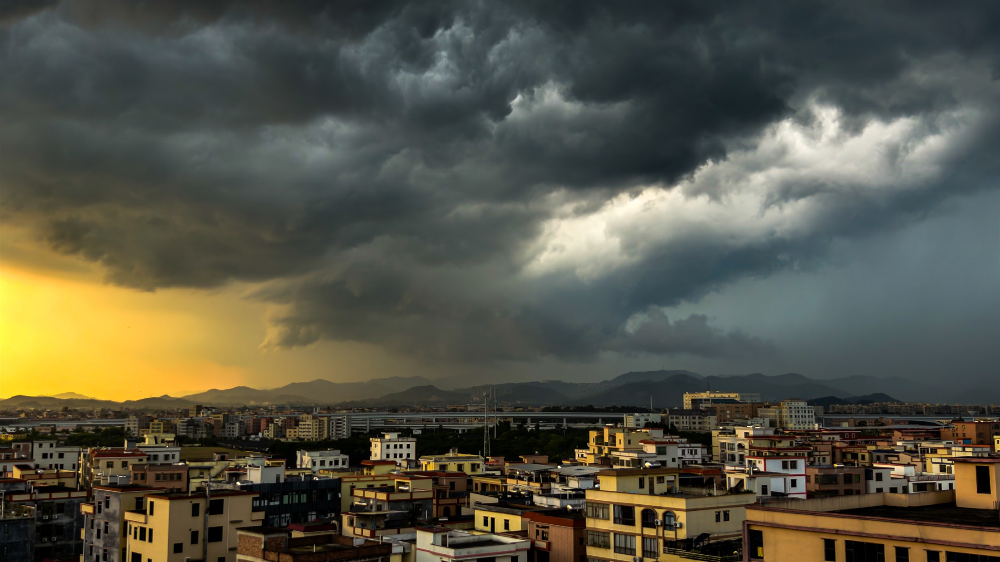
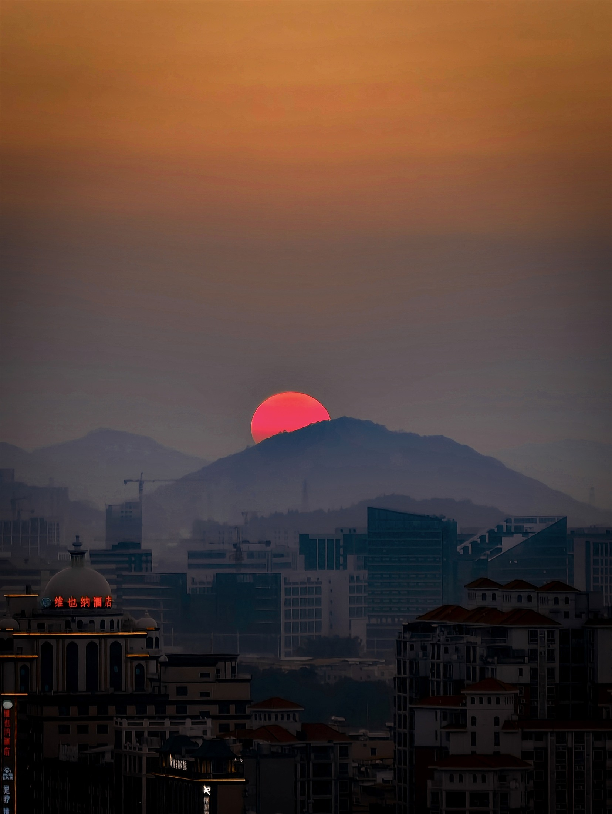
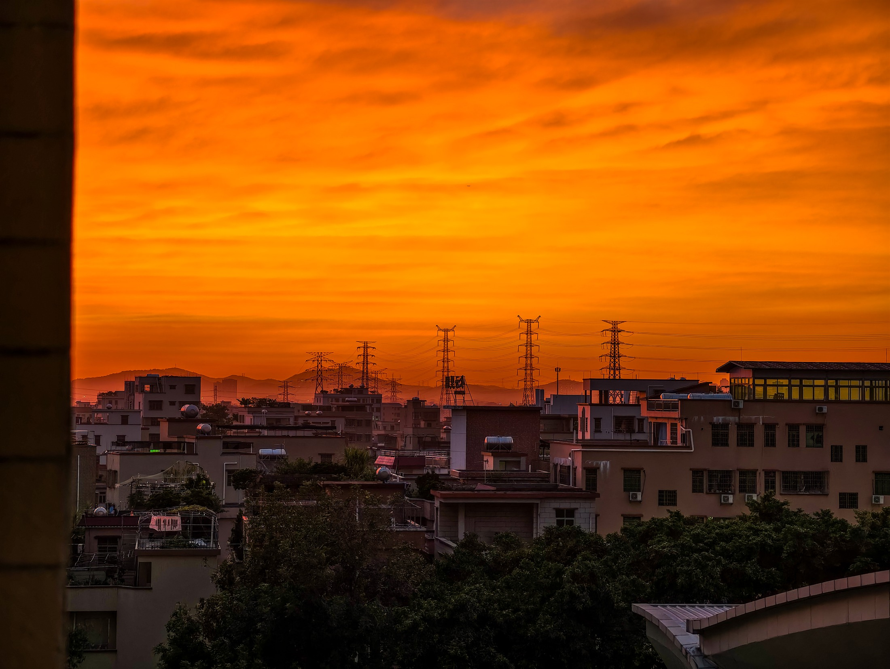
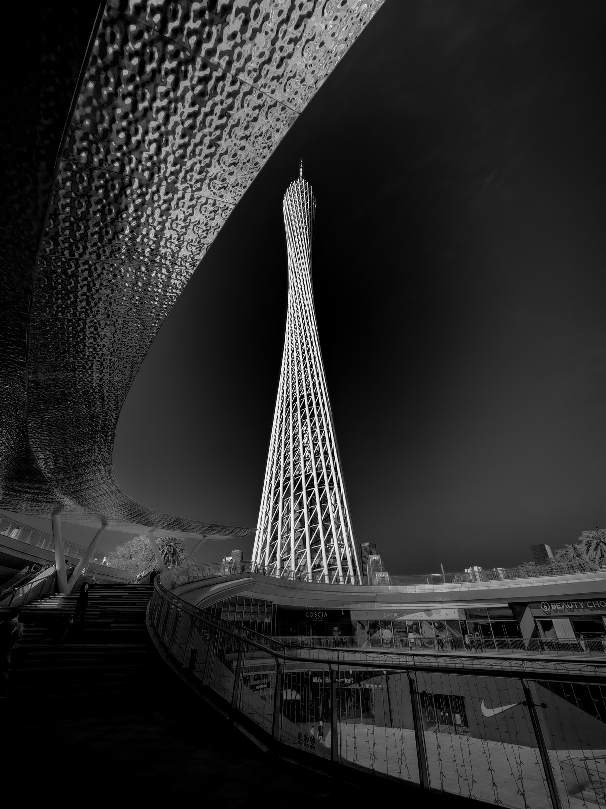
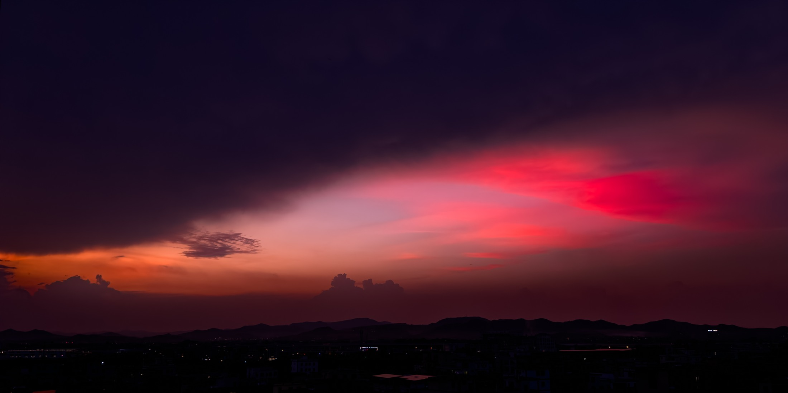

这不是影集，是一份「我在看什么」的记录。每一张都写下我以为值得注意的地方—— 高光有没有压住、暗部还有没有细节、长焦端是否开始涂抹、色彩和当天眼睛看到的差多少。 设备是 vivo X100 Ultra，后期用 Lightroom。
看一张照片时，我会固定按同一个顺序检查，避免被"整体好看"带着走。这套顺序是做图像测试最基本的底子。
高光区（天空、灯、太阳边缘）有没有过曝成一片死白；暗部（阴影、树、建筑背面）有没有变成纯黑。 这两件事后期基本救不回来，所以我放在最前面看。
把图放大到 100%，看边缘线条是从清晰变糊，还是出现色边（紫边/绿边）、噪点和涂抹感。 长焦端和逆光场景最容易暴露这些问题。
白平衡偏不偏、肤色是不是发黄发红、同一场景不同镜头切来切去时色彩有没有跳变。 我后期调色，但调色之前我会先判断原片本身留下了什么。
以下为我本人拍摄。点图可看大图。





如果贵司需要，我可以提供对应的原片与调色前版本做参考。
| 拍摄设备 | vivo X100 Ultra（主摄 / 长焦 / 超广角全焦段），日常主力机 |
|---|---|
| 焦距覆盖 | 最广 14mm 等效（超广角）到最长 344mm 等效；另有 85mm 等效的长焦作品 |
| 后期工具 | Lightroom（曝光、高光与阴影恢复、白平衡与色温、对比度、清晰度与降噪、色彩分级）；剪映（视频剪辑） |
| 拍摄题材 | 城市与建筑、日落与天空、逆光与弱光、大光比场景；以风景与日常纪实为主 |
| 可提供的素材 | 原始分辨率照片、调色前 / 调色后对比、同一场景不同焦段的成组照片 |
| 作品发布 | 抖音账号 Think2Much，持续发布手机摄影与调色作品，多作品综合点赞数约 400 |
| 关于本页 EXIF | 所用照片经厂商套件导出，快门 / 光圈 / ISO 信息已被清除，仅等效焦距得以保留，因此本页只标注可核实的参数，不作推测 |